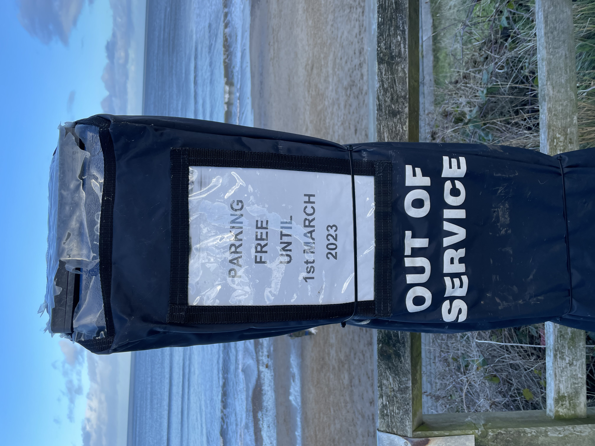

Finding a place to park can be tricky in Whitby, but here are a pointers only usualy known to the locals.
Free parking can be limited but there are a few places not too far from the cottage, failing that there are a number of council metered car parks.
2.
The Church Street Turnaround...
When you unpack your car the ideal place to park is just before the cobbled road narrows, but if you feel you can't turn around there, don't worry; you can continue forward all the way to the end of
Henrietta Street, where there is a turning place at the end.

Completely Free!
You can park for free all over Whitby from January 1st upto begining of March, lookout for the Out of Service covers on the Meters.